3 — Simulation tools
Download this tutorial as a Jupyter notebook (with NotebookUtils.jl next to it).
Ristretto has everything needed to fabricate a realistic acquisition: coil sensitivity maps, sampling-pattern generators, a forward simulator and noise. The phantoms themselves come from GeometricMedicalPhantoms.jl, a separate package. This tutorial is a tour of all of them.
Contents
- Phantoms (2D and 3D)
- Coil sensitivity maps
- Sampling patterns — uniform random, variable density, Poisson disk, regular lattice, partial Fourier
- Sampling patterns in 3D
- Hand-written patterns
simulate_acquisition- Noise and SNR
- A dynamic series
using .NotebookUtils
using Ristretto
using Ristretto: parts
using GeometricMedicalPhantoms: create_shepp_logan_phantom, MRISheppLoganIntensities,
create_torso_phantom, generate_respiratory_signal, generate_cardiac_signals
using MIRTjim: jim
using Plots
using LinearAlgebra: norm
using Statistics: std
using Random
Random.seed!(0);1. Phantoms
Phantoms come from GeometricMedicalPhantoms.jl. MRISheppLoganIntensities() gives the ellipse intensities MRI papers use (rather than the CT values of the original Shepp–Logan), and the phantom can be produced directly as ComplexF32.
x2d = create_shepp_logan_phantom(
256, 256, :axial; ti = MRISheppLoganIntensities(), eltype = ComplexF32
)
jim(x2d; title = "2D Shepp–Logan (axial)", size = (400, 350))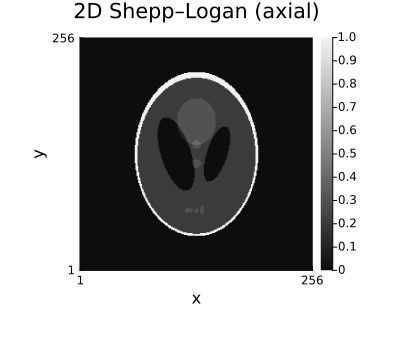
# Other orientations of the same 3D model.
jim(
jim(create_shepp_logan_phantom(128, 128, :axial; ti = MRISheppLoganIntensities()); title = "axial"),
jim(create_shepp_logan_phantom(128, 128, :coronal; ti = MRISheppLoganIntensities()); title = "coronal"),
jim(create_shepp_logan_phantom(128, 128, :sagittal; ti = MRISheppLoganIntensities()); title = "sagittal");
layout = (1, 3), size = (1000, 300)
)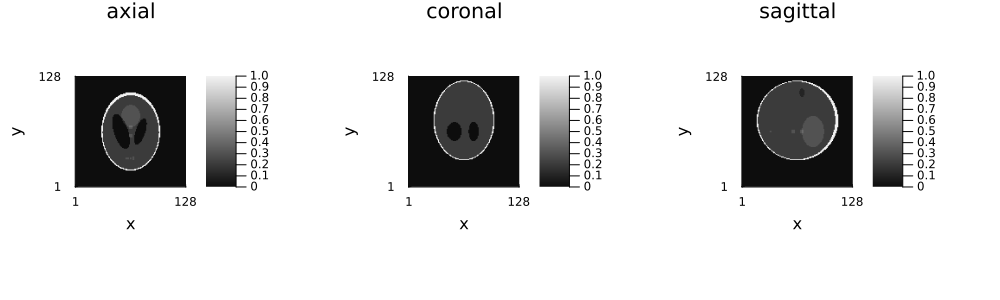
# A 3D volume: (nx, ny, nz). Scrolled through as an animation rather than laid out as a montage —
# a volume is easier to read when the slices occupy the same place on the page one after another.
x3d = create_shepp_logan_phantom(128, 128, 32; ti = MRISheppLoganIntensities(), eltype = ComplexF32)
println(size(x3d), " ", eltype(x3d))
animate_slices(x3d; title = i -> "3D Shepp-Logan, slice $i of 32", fps = 6, size = (400, 350))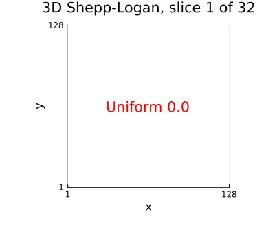
2. Coil sensitivity maps
coil_sensitivities(nx, ny[, nz], ncoils) returns smooth complex profiles arranged around the field of view — enough structure for parallel imaging to be non-trivial.
smaps = coil_sensitivities(128, 128, 8)
println(size(smaps), " ", eltype(smaps))
jim(smaps; title = "Coil sensitivity maps (magnitude)", nrow = 2, size = (800, 400))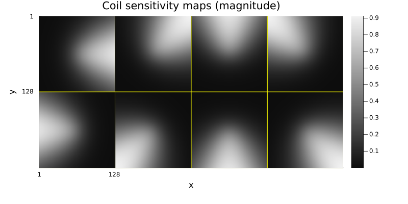
# The phase is what makes coil combination non-trivial.
jim(angle.(smaps); title = "Coil sensitivity phase", nrow = 2, size = (800, 400), clim = (-π, π))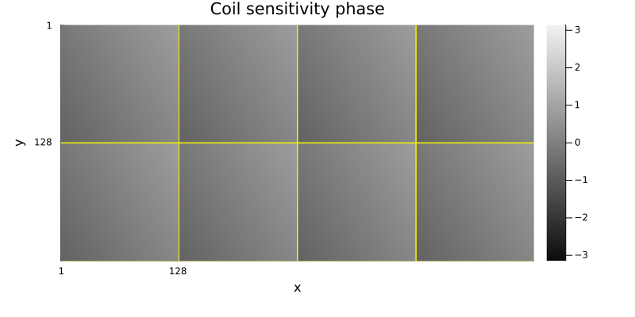
# 3D maps: (nx, ny, nz, ncoils).
smaps3d = coil_sensitivities(64, 64, 16, 8)
println(size(smaps3d))
jim(smaps3d[:, :, 8, :]; title = "3D maps, central slice", nrow = 2, size = (800, 400))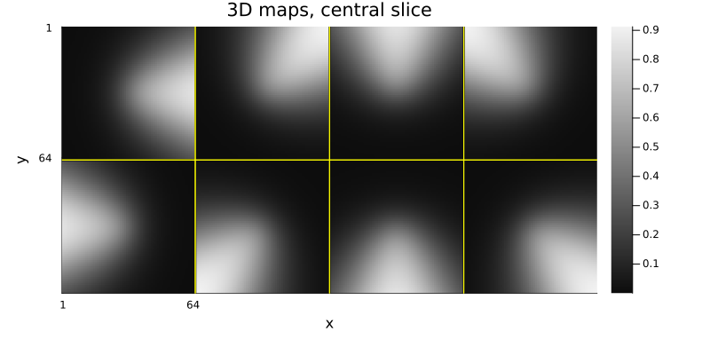
3. Sampling patterns
A Subsampling object describes how to sample; create_sampling_pattern draws one realisation for a given image size. By default the frequency-encoding direction is fully sampled, so the returned pattern is (:, mask) — that is the default because frequency encoding is essentially free (the whole readout arrives during one gradient echo), and it is undersampled only in rare cases.
Uniform random sampling
pdf = UniformRandomSampling(3.0) # R = 3, default 10% central band
pattern = create_sampling_pattern(pdf, (256, 256))
println(typeof(pattern))
println("acquired phase encodes: ", sum(pattern[2]), " of 256")Tuple{Colon, BitVector}
acquired phase encodes: 85 of 256# Uniform random sampling with different fully-sampled centre fractions.
p1 = jim(to_displayable_mask(create_sampling_pattern(UniformRandomSampling(3.0), (256, 256)), (256, 256)); title = "cf = 0.1", kaxes...)
p2 = jim(to_displayable_mask(create_sampling_pattern(UniformRandomSampling(3.0, 0.3), (256, 256)), (256, 256)); title = "cf = 0.3", kaxes...)
p3 = jim(
to_displayable_mask(
create_sampling_pattern(UniformRandomSampling(3.0), (256, 256); subsample_freq_encoding = true),
(256, 256)
); title = "kx also undersampled", kaxes...
)
jim(p1, p2, p3; layout = (1, 3), size = (1000, 320))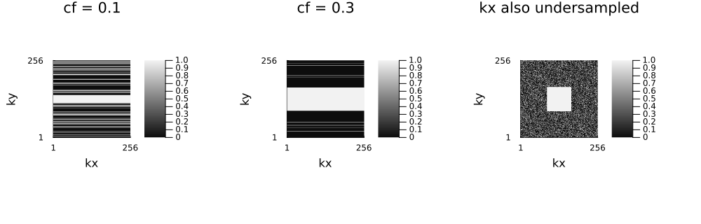
Variable density
The compressed-sensing workhorse: sample the centre of k-space densely and the periphery sparsely. The density profile is either Gaussian or polynomial.
using Ristretto: construct_weights
function show_density(pdf, label)
W = construct_weights(pdf, (128,))
pat = create_sampling_pattern(pdf, (128, 128))
p1 = plot(
W; legend = false, title = "$label — density",
xlabel = "phase encode index", ylabel = "sampling weight",
)
p2 = jim(to_displayable_mask(pat, (128, 128)); title = "$label — pattern", kaxes...)
return jim(p1, p2; layout = (1, 2), size = (750, 300))
end
show_density(VariableDensitySampling(GaussianDistribution(1 / 3), 3.0), "Gaussian σ=1/3")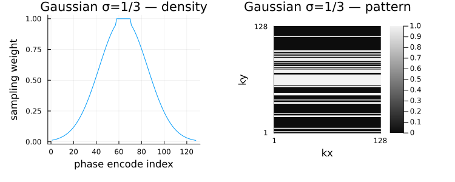
show_density(VariableDensitySampling(GaussianDistribution(1 / 5), 3.0), "Gaussian σ=1/5")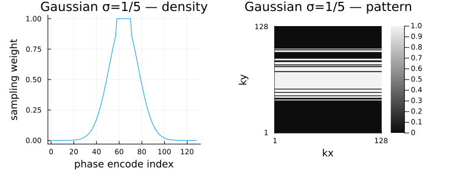
show_density(VariableDensitySampling(PolynomialDistribution(2), 3.0), "Polynomial p=2")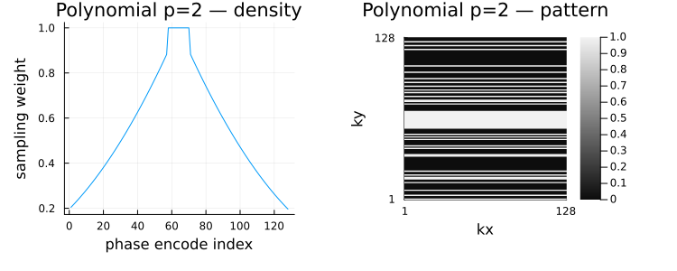
show_density(VariableDensitySampling(PolynomialDistribution(4), 3.0), "Polynomial p=4")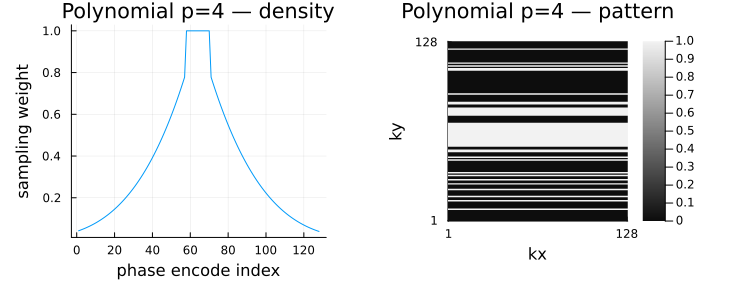
Poisson disk
Keeps a minimum distance between samples, so the coverage is uniform without the clumping of purely random sampling — the incoherent-but-even pattern favoured for 2D-undersampled 3D acquisitions.
pat_pd = create_sampling_pattern(PoissonDiskSampling(3.0), (128, 128); subsample_freq_encoding = true)
jim(to_displayable_mask(pat_pd, (128, 128)); title = "Poisson disk, R = 3", size = (400, 350), kaxes...)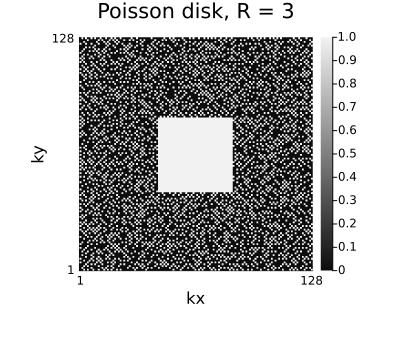
Regular lattice sampling, and partial Fourier
The other half of the sampling world: not incoherent at all, but exactly the pattern autocalibrated parallel imaging needs. RegularLatticeSampling acquires every R-th phase encode, optionally with a fully sampled autocalibration (ACS) band in the centre. It is deterministic — one realisation is the pattern — and it is what GRAPPA requires: its kernel is defined by a fixed geometric relation between a hole and its neighbours, which only a regular lattice has.
PartialFourierSampling is a separate generator, not an option of the lattice. It acquires a contiguous band from one end of k-space and nothing past it, exploiting the Hermitian symmetry of k-space rather than coil encoding, and it is reconstructed by Homodyne or POCS rather than by a parallel-imaging method. Combining the two would leave a pattern that neither handles as intended.
# Drawn on a 64-line grid rather than 256: at three panels across a page, a 256-line mask is
# rescaled to fewer pixels than it has lines, and every-third-line sampling comes out as a solid
# block or a moiré pattern rather than as the lines it is. The acceleration is the same either way.
n_show = 64
pat_reg = create_sampling_pattern(RegularLatticeSampling(3), (n_show, n_show))
pat_acs = create_sampling_pattern(RegularLatticeSampling(3; center_fraction = 0.1), (n_show, n_show))
pat_pf = create_sampling_pattern(PartialFourierSampling(0.75), (n_show, n_show))
for (label, p) in (("R=3, no ACS", pat_reg), ("R=3 + 10% ACS", pat_acs), ("75% partial Fourier", pat_pf))
println(rpad(label, 20), " net acceleration ", round(n_show / sum(p[2]), digits = 2), "×")
end
jim(
jim(to_displayable_mask(pat_reg, (n_show, n_show)); title = "R = 3, no ACS", kaxes...),
jim(to_displayable_mask(pat_acs, (n_show, n_show)); title = "R = 3 + 10% ACS", kaxes...),
jim(to_displayable_mask(pat_pf, (n_show, n_show)); title = "75% partial Fourier", kaxes...);
layout = (1, 3), size = (1000, 320)
)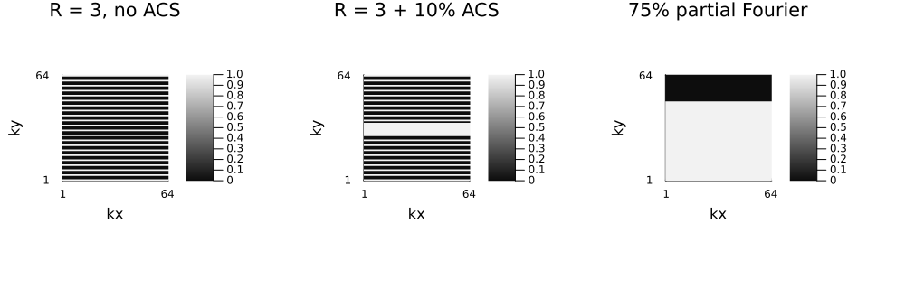
4. Patterns in 3D
In 3D both phase-encoding directions can be undersampled, and the pattern is a 3-tuple.
pat3d = create_sampling_pattern(VariableDensitySampling(PolynomialDistribution(2), 4.0), (128, 128, 64))
mask3d = zeros(Bool, 128, 128, 64)
mask3d[pat3d...] .= true
println("acceleration: ", round(length(mask3d) / sum(mask3d), digits = 2), "×")
# The axis labels already say which plane each panel is, so the panels carry no titles.
jim(
jim(mask3d[:, :, 32]; xlabel = "kx", ylabel = "ky"),
jim(mask3d[:, 64, :]; xlabel = "kx", ylabel = "kz"),
jim(mask3d[64, :, :]; xlabel = "ky", ylabel = "kz");
layout = (1, 3), size = (1000, 300)
)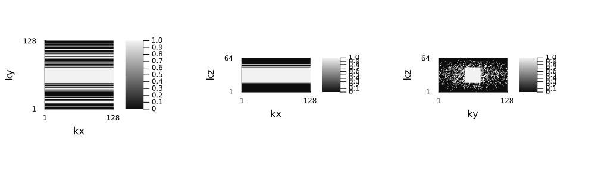
5. Hand-written patterns
subsampling does not have to come from a generator. The default idiom for a scanner-specific scheme is a tuple of per-dimension indexing expressions — a range, a step, a Vector of indices, : for "everything acquired" — because it states the pattern directly (a stride, a start, a count) instead of making the reader recover those numbers by scanning a boolean array. A boolean mask is still accepted, and stays the right tool for a pattern that has no closed form — variable-density and Poisson-disc random sampling in section 3 are exactly that case, which is why create_sampling_pattern returns one there.
The regular schemes below are what RegularLatticeSampling and PartialFourierSampling generate; writing them out by hand is how to reach a variant it does not cover (an offset start, an asymmetric ACS block, a per-dimension rule of your own).
# Partial Fourier: the first 65% of phase encodes, as a plain range.
ny = 256
subsampling_pf = (:, 1:round(Int, 0.65 * ny))
acq_pf = AcquisitionInfo(
nothing; is3D = false, image_size = (256, 256), subsampling = subsampling_pf
)
println("phase encodes: ", length(subsampling_pf[2]), " of ", ny)phase encodes: 166 of 256# Regular R = 4 with a 21-line autocalibration (ACS) band — the GRAPPA-style pattern. A
# strided range unioned with the ACS range states the acceleration and the calibration extent
# directly; recovering either number from a boolean mask would mean scanning it (or plotting
# it, as below) instead of just reading the expression.
acs_half = 10
subsampling_grappa = (:, sort(union(1:4:ny, (ny ÷ 2 - acs_half):(ny ÷ 2 + acs_half))))
acq_grappa_like = AcquisitionInfo(
nothing; is3D = false, image_size = (256, 256), subsampling = subsampling_grappa
)
println("net acceleration: ", round(ny / length(subsampling_grappa[2]), digits = 2), "×")
# The generator states the same two patterns without the index arithmetic.
println(
"same pattern from RegularLatticeSampling: ",
sort(findall(create_sampling_pattern(RegularLatticeSampling(4; center_fraction = 21 / 256), (256, 256))[2])) ==
collect(subsampling_grappa[2])
)
println(
"same pattern from PartialFourierSampling: ",
findall(create_sampling_pattern(PartialFourierSampling(0.65), (256, 256))[2]) ==
collect(subsampling_pf[2])
)net acceleration: 3.2×
same pattern from RegularLatticeSampling: true
same pattern from PartialFourierSampling: true# The two patterns above, rendered as masks purely for display.
mask_grappa = falses(ny)
mask_grappa[subsampling_grappa[2]] .= true
mask_pf = falses(ny)
mask_pf[subsampling_pf[2]] .= true
jim(
jim(repeat(reshape(mask_grappa, 1, :), 256, 1); title = "regular R=4 + ACS", kaxes...),
jim(repeat(reshape(mask_pf, 1, :), 256, 1); title = "partial Fourier 65%", kaxes...);
layout = (1, 2), size = (800, 320)
)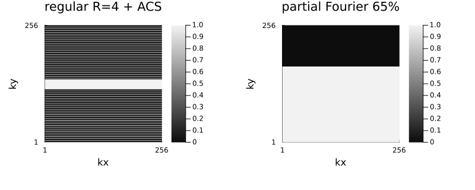
6. simulate_acquisition
simulate_acquisition(image, acq) applies the encoding operator described by acq and returns a new AcquisitionInfo carrying the simulated k-space. Whatever the configuration describes — coils, undersampling, shifts, 3D, batch dimensions — is what gets simulated.
nx, ny, nc = 128, 128, 8
x = create_shepp_logan_phantom(nx, ny, :axial; ti = MRISheppLoganIntensities(), eltype = ComplexF32)
smaps = coil_sensitivities(nx, ny, nc)
pattern = create_sampling_pattern(VariableDensitySampling(PolynomialDistribution(3), 4.0, 0.05), (nx, ny))
acq = AcquisitionInfo(;
is3D = false, image_size = (nx, ny), sensitivity_maps = smaps, subsampling = pattern
)
data = simulate_acquisition(x, acq; keep_sensitivity_maps = true)
println("simulated k-space: ", size(data.kspace_data))┌ Warning: simulate_acquisition: the phantom has the reconstruction's size 128×128, so the data are simulated with the operator that will reconstruct them (the inverse crime), and reconstructions look better than they would on measured data. Simulate from a finer, area-sampled phantom, e.g. 202×202; pass `inverse_crime_check = false` where the consistency is intended.
└ @ Ristretto ~/work/Ristretto.jl/Ristretto.jl/src/simulation/simulate_acquisition.jl:313
simulated k-space: (128, 32, 8)# Fully sampled single-coil, for comparison: the k-space is the whole grid.
acq_full = AcquisitionInfo(; is3D = false, image_size = (nx, ny))
data_full = simulate_acquisition(x, acq_full; keep_sensitivity_maps = true)
println("fully sampled k-space: ", size(data_full.kspace_data))
jim(
log.(abs.(data_full.kspace_data) .+ 1.0f-6);
title = "log |k-space|", size = (400, 350), kaxes...
)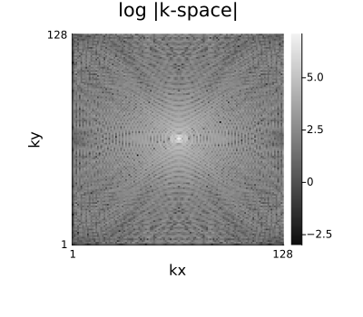
# 3D acquisition. (The variable-density weights need a reasonably long kz axis; a very short
# one — 16 partitions, say — makes the polynomial density go negative and throws.)
x3 = create_shepp_logan_phantom(64, 64, 32; ti = MRISheppLoganIntensities(), eltype = ComplexF32)
acq3 = AcquisitionInfo(;
image_size = (64, 64, 32),
sensitivity_maps = coil_sensitivities(64, 64, 32, 4),
subsampling = create_sampling_pattern(
VariableDensitySampling(PolynomialDistribution(3), 4.0, 0.05), (64, 64, 32)
),
)
data3 = simulate_acquisition(x3, acq3; keep_sensitivity_maps = true)
println("3D k-space: ", size(data3.kspace_data))┌ Warning: simulate_acquisition: the phantom has the reconstruction's size 64×64×32, so the data are simulated with the operator that will reconstruct them (the inverse crime), and reconstructions look better than they would on measured data. Simulate from a finer, area-sampled phantom, e.g. 101×101×51; pass `inverse_crime_check = false` where the consistency is intended.
└ @ Ristretto ~/work/Ristretto.jl/Ristretto.jl/src/simulation/simulate_acquisition.jl:313
3D k-space: (64, 512, 4)Avoiding the inverse crime
The cells above simulate the data with the very operator that will reconstruct them, on the reconstruction's own grid. That is the inverse crime (Kaipio & Somersalo, 2007): the data fit the model exactly, so reconstructions look better than they would on measured data. This is what the warnings printed above are about; inverse_crime_check = false silences them where the consistency is intended. Realistic data come from a finer phantom (Guerquin-Kern et al., 2012): image_size is the reconstruction grid, the phantom's own size the grid the data are simulated on, and only the frequencies the reconstruction grid can represent are kept. The phantom should be area-sampled (supersample), and about 1.6 times finer per axis is enough for the simulation error to fall to the noise level of 30 dB data; a round ratio such as 2 is avoided, since it leaves every reconstruction voxel centre on a phantom voxel centre. Coil maps act on the phantom, so they are made at its size; the returned acquisition carries none unless keep_sensitivity_maps = true, because a reconstruction that reuses the simulation's maps is part of the same crime.
- J. Kaipio, E. Somersalo, "Statistical inverse problems: discretization, model reduction and inverse crimes", J. Comput. Appl. Math. 198(2):493–504, 2007, https://doi.org/10.1016/j.cam.2005.09.027
- M. Guerquin-Kern, L. Lejeune, K. P. Pruessmann, M. Unser, "Realistic analytical phantoms for parallel magnetic resonance imaging", IEEE Trans. Med. Imaging 31(3):626–636, 2012, https://doi.org/10.1109/TMI.2011.2174158
# One function rasterizes the object at any size, so the data and the truth below describe the
# same phantom.
area_sampled_phantom(n) = create_shepp_logan_phantom(
n, n, :axial; ti = MRISheppLoganIntensities(), eltype = ComplexF32, supersample = 4
)
nfine = 202 # ≈ 1.58 × 128
x_fine = area_sampled_phantom(nfine)
acq_fine = AcquisitionInfo(;
is3D = false, image_size = (nx, ny), sensitivity_maps = coil_sensitivities(nfine, nfine, nc),
subsampling = pattern,
)
data_fine = simulate_acquisition(x_fine, acq_fine)
println("k-space on the 128² grid from a 202² phantom: ", size(data_fine.kspace_data))
println("sensitivity maps returned: ", data_fine.sensitivity_maps)[ Info: simulate_acquisition: the returned acquisition carries no sensitivity maps, since reusing the maps that simulated the data is part of the inverse crime. Estimate them (`estimate_sensitivities`) before reconstructing, or pass `keep_sensitivity_maps = true` to keep them (`false` drops them silently).
k-space on the 128² grid from a 202² phantom: (128, 32, 8)
sensitivity maps returned: nothingThe ground truth for error measures
Errors are measured on the reconstruction grid, against the same object area-sampled there: neither the fine phantom (wrong size) nor the point-sampled x above will do. The same TV reconstruction is scored three ways below: the inverse crime, the fine-phantom data against the point-sampled x, and the fine-phantom data against the area-sampled truth, the only pairing whose figure carries over to measured data. The coil maps are kept to isolate the phantom's effect; a fully honest simulation estimates them too.
x_truth = area_sampled_phantom(nx)
data_fine_maps = simulate_acquisition(x_fine, acq_fine; keep_sensitivity_maps = true)
tv = IterativeReconstruction(TotalVariation2D(1.0f-3); maxit = 60)
x_rec_crime = reconstruct(data, tv; verbosity = Silent())
x_rec_fine = reconstruct(data_fine_maps, tv; verbosity = Silent())
for (label, x̂, truth) in (
("128² data, point-sampled truth (inverse crime)", x_rec_crime, x),
("202² data, point-sampled truth (mismatched)", x_rec_fine, x),
("202² data, area-sampled truth", x_rec_fine, x_truth),
)
println(rpad(label, 47), ": NRMSE = ", round(100 * nrmse(x̂, truth); digits = 1), " %")
end128² data, point-sampled truth (inverse crime) : NRMSE = 0.4 %
202² data, point-sampled truth (mismatched) : NRMSE = 22.7 %
202² data, area-sampled truth : NRMSE = 7.3 %# Against the point-sampled image every edge counts as error.
error_map(truth) = abs.(abs.(x_rec_fine) .- abs.(truth))
side_by_side(
error_map(x_truth), error_map(x);
titles = ("error vs area-sampled truth", "error vs point-sampled x")
)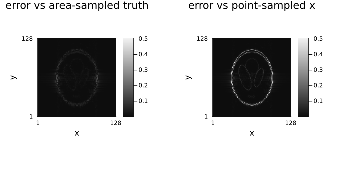
7. Noise and SNR
"SNR" names several different numbers in MRI, and two images of the same object can be quoted at SNRs a factor of five apart without either figure being wrong — what differs is the definition. Two of them matter here, and they sit at opposite ends of the pipeline: the signal-processing one, an amplitude ratio in decibels attached to the measured data, which is what a simulation controls directly; and the clinical one, a bare ratio of signal to noise measured in the reconstructed image, which is what a scanner acceptance test and a radiologist mean. (Others in common use — the multiple-acquisition and difference-image methods, and the parallel-imaging g-factor maps of tutorial 09 — measure the same physical quantity by repeating the acquisition instead of segmenting one image.)
add_noise covers both conventions, and which one to use follows from where the noise is added.
On k-space, snr_db targets a signal-to-noise ratio relative to the root-mean-square (RMS) amplitude of the data, σ = rms(data) * 10^(-snr_db / 20), and noise_std sets an absolute complex standard deviation instead. Passing an AcquisitionInfo adds noise to its k-space and returns a new configuration via the copy constructor. This is the signal-processing definition: amplitude SNR in decibels, computable from the data alone with no regions to draw. Two consequences worth keeping in mind: the RMS is dominated by the centre of k-space, so the image-domain SNR that results is higher than the number passed and the exact relation depends on the object; and because it is relative to the data's own RMS, the same snr_db means the same thing across phantoms and scalings.
On an image, snr targets the clinical definition instead, and estimate_snr measures it back the way a scanner acceptance test does — NEMA MS 1, method 1 of Dietrich et al. (2007):
\[\mathrm{SNR} = 0.6551 \; \frac{\overline{S}_\text{centre box}}{\sigma_\text{corner boxes}}\]
the mean signal in a box at the centre of the image, divided by the standard deviation of the background in boxes placed in its corners. The factor is not a fudge: in a corner there is no signal, so the magnitude of complex Gaussian noise is Rayleigh- rather than Gaussian-distributed, and a Rayleigh distribution's standard deviation is $\sqrt{2 - \pi/2} \approx 0.6551$ times the noise level the ratio wants. Leaving it out overstates the SNR by about 53%.
Both regions are boxes whose size the caller gives in voxels — signal_box for the centre one, noise_box for the corners, and corners to use only some of them when part of the field of view is not signal-free. Nothing is segmented and no threshold is applied anywhere in the estimator. That is the point rather than a simplification: a threshold moves with the noise it is supposed to be measuring, so it clips the upper tail of the background and reads high by tens of percent at low SNR, while a fixed box measures the same region in every image and makes the numbers comparable. What it costs is that the boxes have to land where they should, which is why snr_masks returns them to be looked at rather than taken on trust.
One caveat is about the measurement rather than the image: the corners have to be noise. After a parallel-imaging reconstruction, or any filtering that has touched the air around the object, the corner standard deviation is no longer the noise level and the number is not an SNR — that is what the multiple-acquisition estimator pseudo_replica is for.
# k-space noise: the number is in dB, and it is relative to the k-space RMS.
recs = map((40, 20, 10)) do snr_db
rec = reconstruct(add_noise(data_full; snr_db = snr_db))
jim(rec; title = "$(snr_db) dB on k-space\nimage SNR $(round(estimate_snr(rec), digits = 1))")
end
jim(recs...; layout = (1, 3), size = (1100, 340))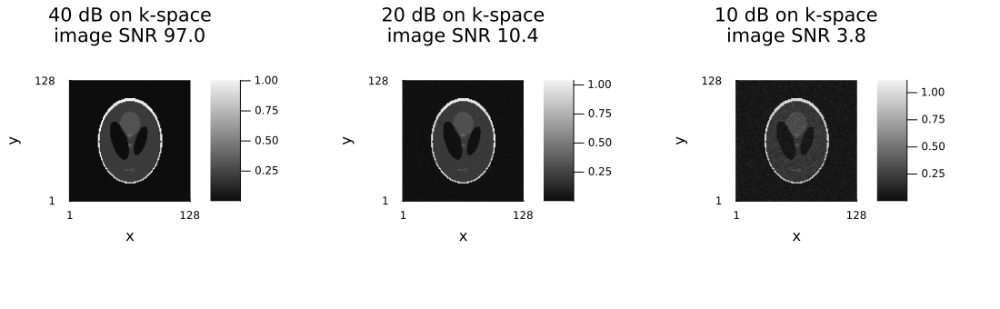
# Image-domain noise: the number is the clinical SNR, and `estimate_snr` recovers it.
x_clean = create_shepp_logan_phantom(
256, 256, :axial; ti = MRISheppLoganIntensities(), eltype = ComplexF32
)
noisy_images = map((50, 20, 8)) do target
img = add_noise(x_clean; snr = target)
jim(img; title = "requested $target\nmeasured $(round(estimate_snr(img), digits = 1))")
end
jim(noisy_images...; layout = (1, 3), size = (1100, 340))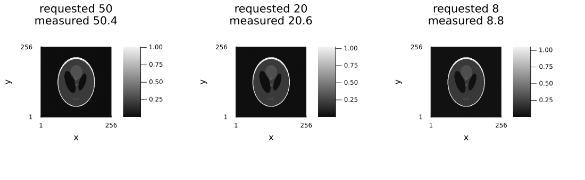
# The two regions the number is actually computed from, shown rather than described: the centre box
# the mean signal is averaged over, and the four corner boxes the noise standard deviation is taken
# in. Each is displayed as the image masked to that region, so it is visible *which* voxels
# contribute and what they contain — note that the corner panel is pure noise, which is the
# assumption the whole method rests on. The centre panel is a fair warning about the other half:
# a Shepp–Logan phantom has its small structures exactly where a centred box lands, so the box
# straddles three intensities rather than sitting in uniform tissue. The round trip still holds
# because `add_noise(; snr)` measures over the same box, but on real data a box placed like this
# would be reporting the mean of an edge. A uniform-phantom acceptance test does not have the
# problem, and `signal_box` is there to shrink the box when the object does.
img20 = add_noise(x_clean; snr = 20)
mag = abs.(img20)
sig_mask, noise_mask = snr_masks(img20) # the default boxes: an eighth of each dimension
signal_mean = sum(mag[sig_mask]) / count(sig_mask)
noise_std = std(mag[noise_mask])
println("mean signal in the centre box: ", round(signal_mean, digits = 4))
println("std over the corner boxes: ", round(noise_std, digits = 4))
println(
"0.6551 * ratio = ", round(sqrt(2 - π / 2) * signal_mean / noise_std, digits = 2),
" (estimate_snr: ", round(estimate_snr(img20), digits = 2), ")"
)
jim(
jim(mag; title = "|noisy image|"),
jim(mag .* sig_mask; title = "signal: centre box\n($(count(sig_mask)) voxels)"),
jim(mag .* noise_mask; title = "noise: four corner boxes\n($(count(noise_mask)) voxels)");
layout = (1, 3), size = (1150, 380),
)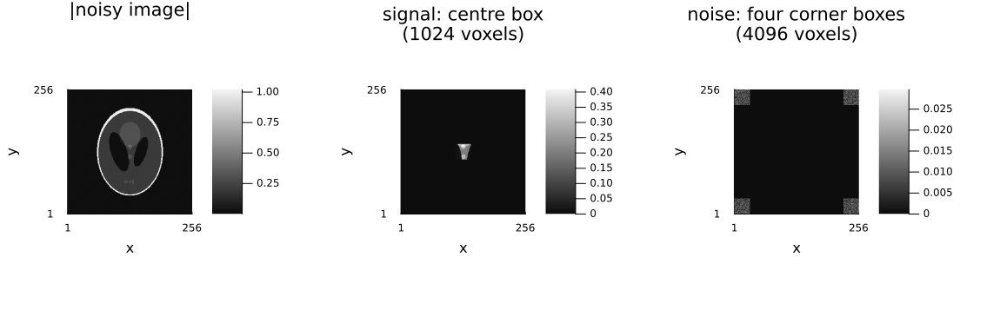
8. A dynamic series
A batch dimension (here :time) is simulated exactly like anything else. For a realistic dynamic series, create_torso_phantom from GeometricMedicalPhantoms.jl (already a dependency of these tutorials) takes a respiratory_signal (in litres, from generate_respiratory_signal) and cardiac_volumes (chamber volumes in millilitres, from generate_cardiac_signals), and returns a 4D (nx, ny, nz, nt) phantom that breathes and beats along with them. A single coronal slice (through the diaphragm, where respiratory motion is largest, and through the heart) gives a 2D dynamic series driven by both motions instead of a hand-rolled bolus.
using NamedDims
nt = 16
rr = 15.0 # breaths per minute
hr = 75.0 # beats per minute
breath_seconds = 60 / rr # one respiratory cycle
# Sample one full cycle with the nt frames, rather than several cycles at four frames each: at a
# coarser temporal resolution consecutive frames land at near-identical respiratory phases and the
# series looks static even though the phantom is moving.
fs = nt / breath_seconds # frame rate, one respiratory cycle over nt frames
t_resp, resp_liters = generate_respiratory_signal(breath_seconds, fs, rr)
# The heart beats several times per respiratory cycle, so the same frame times carry ~3 cardiac
# cycles at 75 bpm: the chamber volumes vary much faster than the lung volume.
t_card, chamber_ml = generate_cardiac_signals(breath_seconds, fs, hr)
cardiac_volumes = map(v -> v[1:nt], chamber_ml)
vol_dyn = create_torso_phantom(
64, 64, 64;
respiratory_signal = resp_liters[1:nt], cardiac_volumes = cardiac_volumes, eltype = ComplexF32,
)
series = NamedDimsArray{(:x, :y, :time)}(vol_dyn[:, 32, :, :]) # one coronal slice, all frames
plot(
plot(
t_resp[1:nt], resp_liters[1:nt];
marker = :circle, lw = 2, label = "", xlabel = "time (s)", ylabel = "lung volume (l)",
title = "respiratory signal",
),
plot(
t_card[1:nt], [cardiac_volumes.lv cardiac_volumes.rv];
marker = :circle, lw = 2, label = ["left ventricle" "right ventricle"],
xlabel = "time (s)", ylabel = "chamber volume (ml)", title = "cardiac signal",
);
layout = (1, 2), size = (1000, 300)
)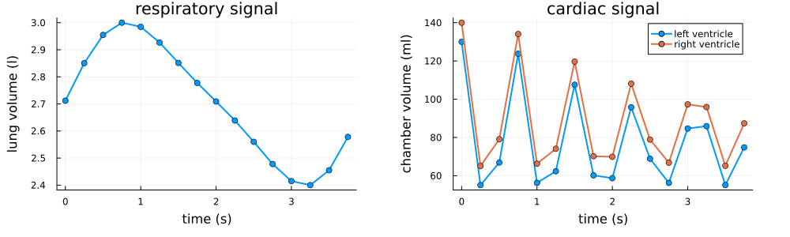
# Played rather than tiled: the diaphragm sweep and the chamber beat are motions, and a strip of
# static frames is the wrong display for a motion.
animate_slices(
series; title = i -> "dynamic series, frame $i of $nt", fps = 8, size = (400, 350),
)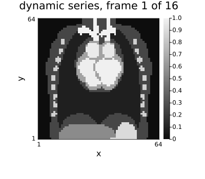
The same pattern for every frame
The (:, mask)/index-expression idiom from section 5 applies unchanged to a series with a :time batch dimension: one subsampling acquires the same phase encodes at every frame. AcquisitionInfo also accepts a Vector of subsampling specs, one per frame, which simulate_acquisition acquires all at once through a single AcquisitionInfo — this is already the right idiom for "a different pattern per frame" when every frame selects the same number of samples (see below).
smaps_dyn = coil_sensitivities(64, 64, 4)
subsampling_same = (:, 1:2:64)
acq_dyn_same = AcquisitionInfo(
nothing; is3D = false, image_size = (64, 64),
sensitivity_maps = NamedDimsArray{(:x, :y, :coil)}(smaps_dyn), subsampling = subsampling_same,
)
data_dyn_same = simulate_acquisition(series, acq_dyn_same; keep_sensitivity_maps = true)
println(dimnames(data_dyn_same.kspace_data), " ", size(data_dyn_same.kspace_data))┌ Warning: simulate_acquisition: the phantom has the reconstruction's size 64×64, so the data are simulated with the operator that will reconstruct them (the inverse crime), and reconstructions look better than they would on measured data. Simulate from a finer, area-sampled phantom, e.g. 101×101; pass `inverse_crime_check = false` where the consistency is intended.
└ @ Ristretto ~/work/Ristretto.jl/Ristretto.jl/src/simulation/simulate_acquisition.jl:313
(:kx, :ky, :coil, :time) (64, 32, 4, 16)A different pattern per frame
The interesting case for temporal regularizers: incoherent aliasing across time, so that a temporal-Fourier or low-rank penalty has something to exploit. One AcquisitionInfo still does it — subsampling is simply a Vector of per-frame specs, each acquiring a different but equal-count set of phase encodes (an equal-count requirement, since the simulated k-space is one dense array).
ny_dyn = 64
# Alternate between two R=2 patterns (odd/even phase encodes) — incoherent frame to frame,
# same number of samples every frame.
subsampling_per_frame = [(:, isodd(t) ? (1:2:ny_dyn) : (2:2:ny_dyn)) for t in 1:nt]
println("acquired phase encodes per frame: ", length.(getindex.(subsampling_per_frame, 2)))
acq_dyn_varying = AcquisitionInfo(
nothing; is3D = false, image_size = (64, 64),
sensitivity_maps = NamedDimsArray{(:x, :y, :coil)}(smaps_dyn),
subsampling = subsampling_per_frame,
)
data_dyn_varying = simulate_acquisition(series, acq_dyn_varying; keep_sensitivity_maps = true)
println(dimnames(data_dyn_varying.kspace_data), " ", size(data_dyn_varying.kspace_data))acquired phase encodes per frame: [32, 32, 32, 32, 32, 32, 32, 32, 32, 32, 32, 32, 32, 32, 32, 32]
┌ Warning: simulate_acquisition: the phantom has the reconstruction's size 64×64, so the data are simulated with the operator that will reconstruct them (the inverse crime), and reconstructions look better than they would on measured data. Simulate from a finer, area-sampled phantom, e.g. 101×101; pass `inverse_crime_check = false` where the consistency is intended.
└ @ Ristretto ~/work/Ristretto.jl/Ristretto.jl/src/simulation/simulate_acquisition.jl:313
(:kx, :ky, :coil, :time) (64, 32, 4, 16)Unequal sample counts per frame
When the per-frame specs select different numbers of samples — a more aggressive schedule for later frames, say — the result can no longer be one dense array. simulate_acquisition detects this automatically and returns a PartitionedKSpace instead, wrapping one dense k-space array per frame. reconstruct still returns a plain Array: the partitioning is an internal storage detail of the measurement, not something that propagates to the image.
subsampling_unequal = [(:, 1:(t + 1):ny_dyn) for t in 1:nt] # acceleration increases with t
println("acquired phase encodes per frame: ", length.(getindex.(subsampling_unequal, 2)))
acq_dyn_unequal = AcquisitionInfo(
nothing; is3D = false, image_size = (64, 64),
sensitivity_maps = NamedDimsArray{(:x, :y, :coil)}(smaps_dyn),
subsampling = subsampling_unequal,
)
data_dyn_unequal = simulate_acquisition(series, acq_dyn_unequal; keep_sensitivity_maps = true)
println(typeof(data_dyn_unequal.kspace_data))
println("per-frame k-space sizes: ", size.(parts(data_dyn_unequal.kspace_data)))
rec_unequal = reconstruct(data_dyn_unequal)
println(typeof(rec_unequal), " ", size(rec_unequal))acquired phase encodes per frame: [32, 22, 16, 13, 11, 10, 8, 8, 7, 6, 6, 5, 5, 5, 4, 4]
┌ Warning: simulate_acquisition: the phantom has the reconstruction's size 64×64, so the data are simulated with the operator that will reconstruct them (the inverse crime), and reconstructions look better than they would on measured data. Simulate from a finer, area-sampled phantom, e.g. 101×101; pass `inverse_crime_check = false` where the consistency is intended.
└ @ Ristretto ~/work/Ristretto.jl/Ristretto.jl/src/simulation/simulate_acquisition.jl:313
PartitionedKSpace{ComplexF32, 4, NamedDimsArray{(:kx, :ky, :coil), ComplexF32, 3, Array{ComplexF32, 3}}, NTuple{4, Symbol}}
per-frame k-space sizes: [(64, 32, 4), (64, 22, 4), (64, 16, 4), (64, 13, 4), (64, 11, 4), (64, 10, 4), (64, 8, 4), (64, 8, 4), (64, 7, 4), (64, 6, 4), (64, 6, 4), (64, 5, 4), (64, 5, 4), (64, 5, 4), (64, 4, 4), (64, 4, 4)]
ReconImage{ComplexF32, 3, NamedDimsArray{(:x, :y, :time), ComplexF32, 3, Array{ComplexF32, 3}}, Nothing} (64, 64, 16)Further reading
The physics behind the objects this tutorial fabricates, from Questions and Answers in MRI:
- k-space: data — what one phase encode is, and why the readout direction of §3 is free.
- Compressed sensing — why the variable-density and Poisson-disc patterns of §3 are random in the first place.
- Parallel imaging — the coil sensitivities of §2, and the regular ACS pattern of §5.
- How to measure SNR — the clinical definitions behind §7's
snrkeyword, and why the background-region recipe needs a correction factor. - Parallel imaging: noise — where the g-factor comes from once these patterns are reconstructed.
Environment
print_versions()Julia Version 1.13.1
Commit 96ca370cf0e (2026-09-25 19:34 UTC)
Build Info:
Official https://julialang.org release
Platform Info:
OS: Linux (x86_64-linux-gnu)
CPU: 4 × AMD EPYC 9V74 80-Core Processor
WORD_SIZE: 64
LLVM: libLLVM-20.1.8 (ORCJIT, znver4)
GC: Built with stock GC
Threads: 2 default, 1 interactive, 2 GC (on 4 virtual cores)
Environment:
JULIA_PKG_SERVER_REGISTRY_PREFERENCE = eager
JULIA_NUM_THREADS = 2
Ristretto 0.1.0 (dev)
AbstractOperators not loaded
FFTWOperators not loaded
NFFTOperators not loaded
WaveletOperators not loaded
DSPOperators not loaded
ContourletOperators not loaded
StructuredOptimization not loaded
ProximalOperators not loaded
ProximalAlgorithms not loaded
OperatorCore not loaded
NestedThreading 0.1.2